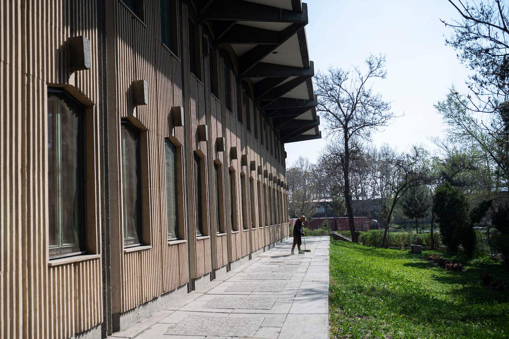

Insights and Stories Inspired by Kabul
In a landmark move for Afghan education, the Future Leaders Academy opened its doors in Kabul on May 30, 2000, marking a significant milestone in the country's ongoing efforts to rebuild and stabilize after years of conflict. The opening ceremony was attended by a vibrant crowd of local officials, educators, international supporters, and enthusiastic families. Located in the bustling district of Kabul, the newly inaugurated school promises to be a cornerstone for educational renewal, offering coeducational learning in a state-of-the-art facility. The Future Leaders Academy features advanced classrooms, a fully equipped science lab, a computer center, and a well-stocked library with resources in multiple languages. "Our mission is to foster an environment of learning and innovation where both boys and girls can prepare to lead Afghanistan into a new era," announced Principal Mohammad Haroon during the opening. "Today, we plant the seeds for the future leaders of our nation."
Funded through a partnership between the Afghan government and several international aid organizations, the school is part of a broader initiative to promote inclusive education in regions that have historically seen gender disparities in educational access. Sarah Chen, from the Global Education Fund, highlighted the importance of such initiatives: "Every child deserves the opportunity to learn and excel, regardless of gender. Education is the key to development, and through institutions like Future Leaders Academy, we can start to turn the tide." The establishment of the academy is especially significant given the timing, as Afghanistan in 2000 was amidst a period of intense political and social upheaval. Educators and policy makers are optimistic that this new school will contribute to a broader socio-economic stability by nurturing a knowledgeable and skilled youth population. Parents and children at the event expressed their hopes and dreams for the future. Amina, a twelve-year-old student who enrolled at the academy, shared her aspirations: "I look forward to learning about computers and science. I dream of becoming an engineer." With classes set to begin immediately, the Future Leaders Academy is ready to challenge and inspire its students, paving the way for a brighter, more equitable future in Afghanistan.